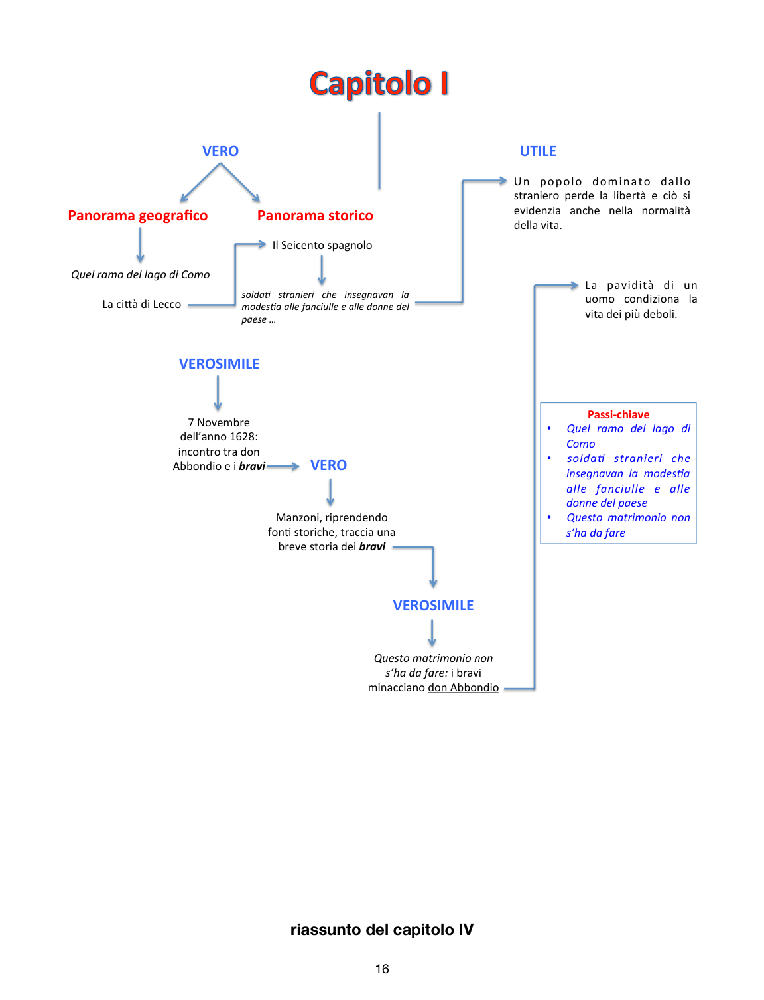

Capitoli chiave del romanzo
Le ultime pagine del PDF selezionano alcuni passaggi emblematici: il capitolo I, fra Cristoforo, Gertrude, l’Innominato e la conversione di Renzo. Qui il romanzo mostra la sua forza concreta.
Capitolo I: “Questo matrimonio non s’ha da fare”
L’apertura del romanzo lega subito paesaggio, storia e violenza. Il lago, Lecco, la dominazione spagnola, i bravi: tutto è già dentro una normalità deformata dal potere. Don Abbondio non è solo un pauroso; è la prova di come la viltà privata possa decidere il destino dei più deboli.

L’Innominato e Renzo
L’Innominato tocca il fondo della propria storia quando il volto di Lucia spezza il suo sistema di violenza. Non cambia per calcolo, ma perché la coscienza finalmente lo costringe a guardarsi. Renzo, al lazzaretto, deve invece imparare il perdono: senza questo passaggio resterebbe prigioniero di una giustizia ancora vendicativa.
Qui Manzoni non sta dicendo che il male non conta. Sta dicendo una cosa più difficile: che la redenzione non cancella il male compiuto, ma impedisce che l’uomo resti chiuso dentro quel male per sempre.
Una sintesi finale
Nel PDF la lezione su Manzoni ruota attorno a una traiettoria netta: dalla conversione personale alla riforma della letteratura, dalla tragedia al romanzo, dal male storico alla Provvidenza che agisce nella storia senza abolire il dolore. È una costruzione didattica solida, e questa PWA la rende semplicemente più leggibile, più navigabile e installabile.